Herhalen met een teller
Op deze pagina
ga je herhaallussen gebruiken om een stukje code te
herhalen en het aantal herhalingen te tellen, zodat je de teller kunt gebruiken om vormen te
tekenen met zich herhalende patronen.
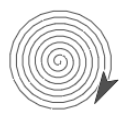
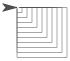
Computerwetenschappers beschrijven de programmastructuur die je hier gaat leren als looping,
herhaling of iteratie. In het Nederlands spreken we ook we van een lus.
Rangschikken, selecteren en itereren zijn de bouwstenen van algoritmes. Kijk nog even bij
H1L2P4: Spelersnamen leren voor een opfrisser over rangschikken
en selecteren.
Het
herhaalblok genereert een oneindige lus die voor zich altijd zal blijven herhalen. Een oneindige lus
kan het resultaat zijn van een bug, maar soms is het juist opzet dat het programma blijft lopen totdat het gestopt
wordt door de gebruiker.
Je hebt de onderstaande manieren gezien om een groep blokken te herhalen:
- herhaalt dezelfde blokken voor altijd. Deze heb je gebruikt om Alonzo te laten blijven bewegen in H1L1P6: Maak er een spel van.
- herhaalt dezelfde blokken een specifiek aantal keer. eze heb je gebruikt om vormen te tekenen in H1L3P1: Beweging verkennen.
Het blok
bevat een teller-variable, , die het aantal herhalingen bijhoudt.
Je kan de naam van de tellervariable
aanpassen door erop te klikken.
Gebruik deze tellervariable in een zich herhalend script. Dit versimpelt lange scripts, zoals hieronder.
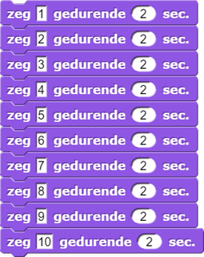
doet hetzelfde als
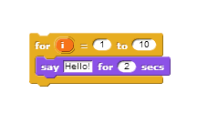
herhaalblok het script binnenin uitvoert,
verhoogt het de waarde van de variabele imet 1. Dit doet het vanaf zijn eerste invoergetal
tot aan zijn tweede invoergetal, hier respectievelijk 1 en 10.
- Klik op het
 -menu aan de bovenkant van het snap beeld en
selecteer "Importeer Tools."
-menu aan de bovenkant van het snap beeld en
selecteer "Importeer Tools."
- Bouw dit script waarin een sprite alle getallen tussen 1 en 10 zegt.
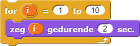- Pas dit script nu aan zodat de sprite de reeks 0, 2, 4, 6, 8, ... tot en met 30 zegt.
 Bespreek hoe je de stap hierboven hebt gedaan met je buur of iemand anders.
Bespreek hoe je de stap hierboven hebt gedaan met je buur of iemand anders.
- Experimenteer met spiralen.
- Bouw het onderstaande script en voer het uit.
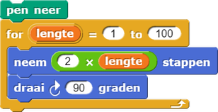
-
Bespreek met elkaar waarom de vierkante spiraal naar buiten draait.
- Probeer eens om in het script van de vierkante spiraal, het eerste en tweede invoergetal te verwisselen
in het
herhaalblok. Wat is het resultaat hiervan? - Probeer eens om de draaihoek in het vierkant-script te veranderen naar andere getallen zoals 92, 126, etc.
- Verander de invoer in de
draai graden- en deneem stappenblokken, om zo dicht mogelijk in de buurt te komen van een ronde spiraal:
- Bouw het onderstaande script en voer het uit.
-
"H1L3-VierkanteSpiraal"

herhaalblok geeft je een standaard variabele, i ( de i staat voor
index). Verander de naam van deze variabele door er op te klikken. Eenmaal veranderd,
sleep je het buiten zijn vakje en kan je het gebruiken zoals elke variabele.
- Open je H1L3-Molen project en bouw een
geneste_vierkantenblok dat eenherhaalblok en jeveelhoekblok gebruikt, om zo een aantal geneste vierkanten te tekenen. "Genest" betekent dat de vierkanten in elkaar zitten. Geef het een invoer zodanig dat het een willekeurigaantal vierkantenzal tekenen die jij specificeert, met elk vierkant groter dan de voorgaande:
- Bouw nu een
geneste_veelhoekenblok dat als invoer een bepaaldaantal veelhoekenen een bepaaldaantal kantenvoor de veelhoeken heeft. - Bouw een script dat twaalf gewone veelhoeken tekent. Elk met steeds één kant meer dan de voorgaande,
zoals hieronder weergegeven.
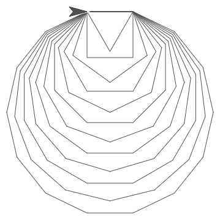 - Voorspel wat het onderstaande script doet, voordat je het uitprobeert:
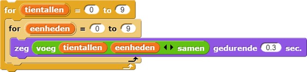
- Bouw een script dat met stappen van 10 aftelt van 100 tot 0 (dus, 100, 90, 80, etc.).
-
Zoek een manier om het
forblok te gebruiken om geneste vierkanten te tekenen.
Bouw je blok met twee invoeren die zeggen hoeveel vierkanten het ontwerp bevat en hoeveel groter elk vierkant zal worden ten opzichte van de vorige.
 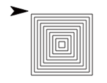
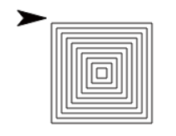
- Hieronder staan twee animaties die de
molencode gebruiken met verschillende invoeren. Probeer zelf ook zo'n artistieke animaties kunt maken.


De onderstaande code kan je ideeën geven over hoe je animaties kunt maken. Zorg ervoor dat je alle
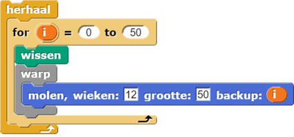wacht0.5secblokken uit jemolencode hebt verwijderd, zodat ze het script niet vertragen. Code die omringd wordt door eenwarpblok, wordt in één keer tegelijkertijd uitgevoerd.
-
 Dit blok is vergelijkbaar met het script dat de vierkante spiraal tekent. Maar het verandert de invoer voor het
Dit blok is vergelijkbaar met het script dat de vierkante spiraal tekent. Maar het verandert de invoer voor het
neem stappenblok, in plaats van de invoer voor hetdraai gradenblok.
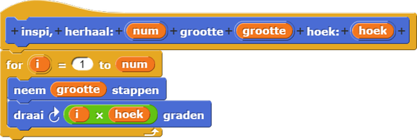
- Probeer te schetsen wat dit blok zal tekenen als de invoer voor de hoek 2 is.
Het aantal herhalingen en de grootte bepaal je zelf. - Bouw nu het blok na en probeer deze tests:
Stop een test met de stop-knop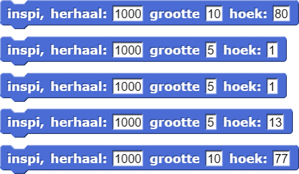 als je er zeker van bent dat er niks nieuws gaat gebeuren. Maar beslis dit nooit te
snel!
als je er zeker van bent dat er niks nieuws gaat gebeuren. Maar beslis dit nooit te
snel!
- Wat gebeurt er? Kun je een theorie bedenken die verklaart welke vorm getekend wordt voor
een specifieke hoek-invoer?
Denk aan deelbaarheid.
- Probeer te schetsen wat dit blok zal tekenen als de invoer voor de hoek 2 is.